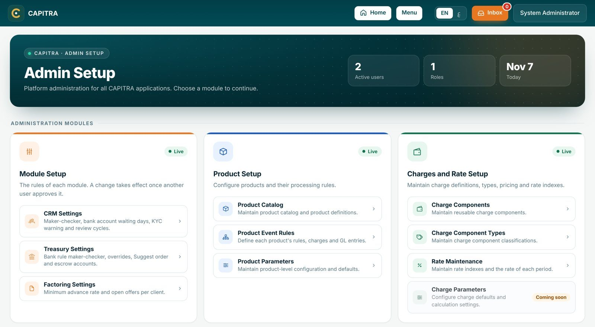
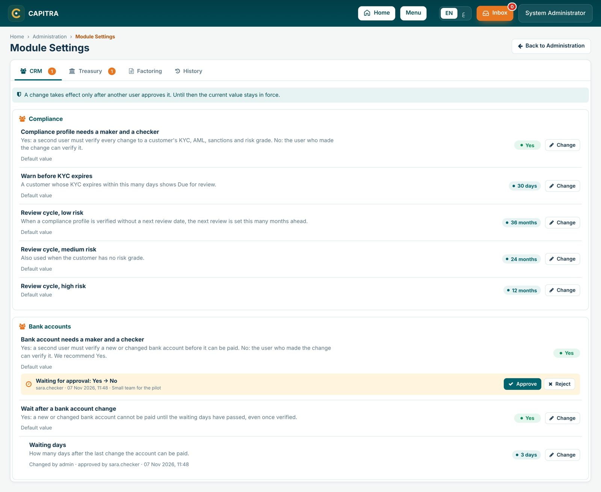
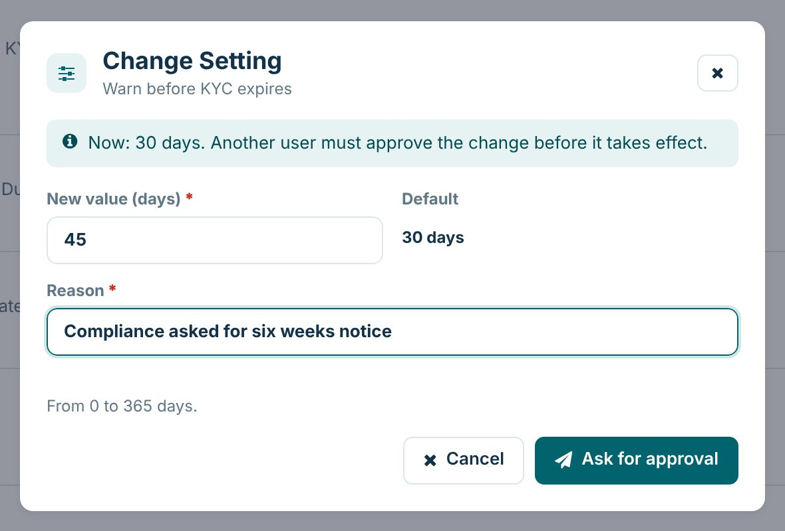
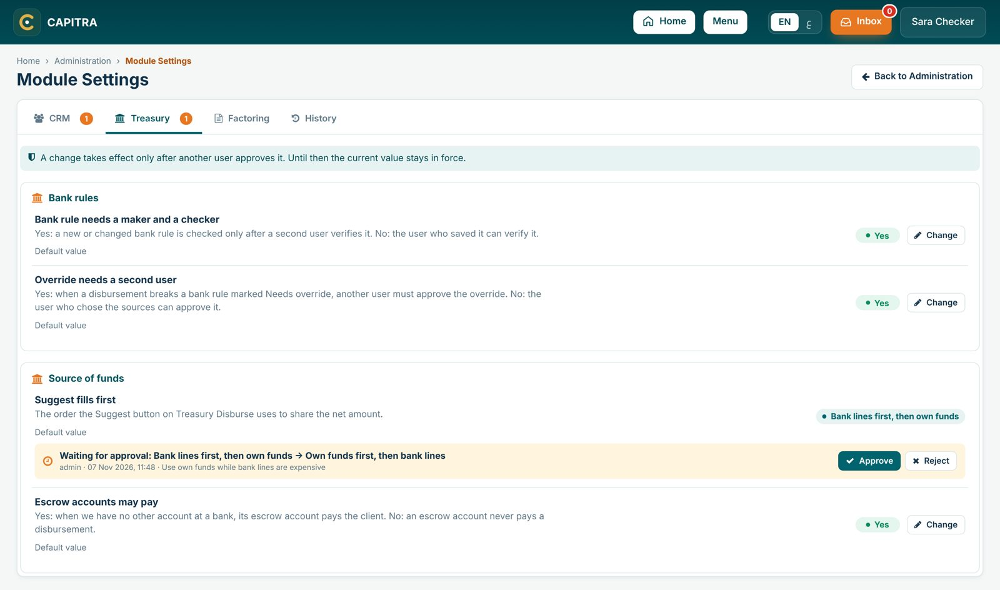
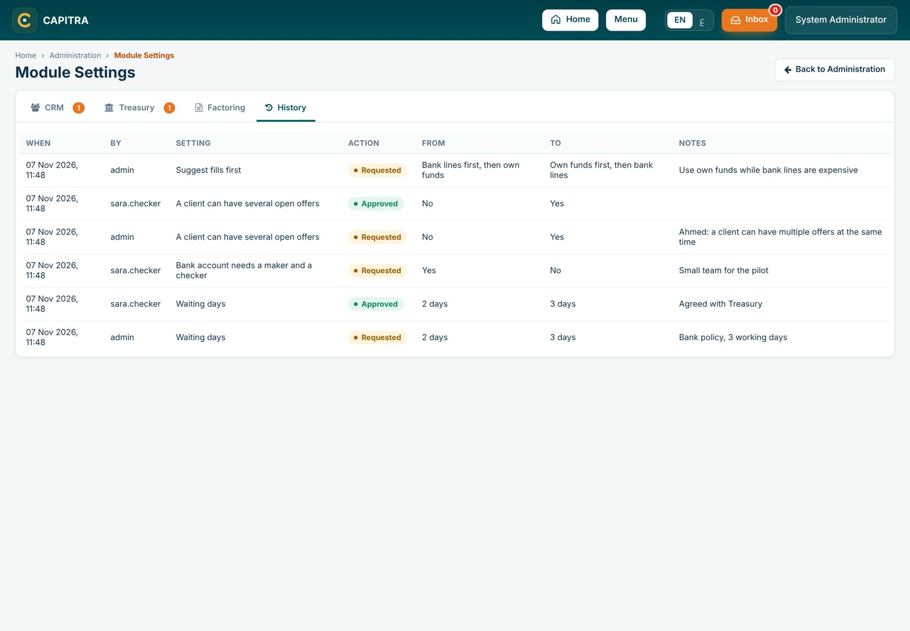

0
Quick start
Maker
Change a setting
- Home → Administration → Module Setup
- Open the module tab
- Change, enter the new value and the reason
- Ask for approval
Checker
Approve or reject
- Open Module Settings: the tab shows how many changes wait
- Read the orange box: old value → new value and the reason
- Approve: the new value is in force at once
- or Reject with the reason

1
How a change works
- A change is a request. Until it is approved the current value stays in force everywhere.
- Another user approves it. The user who asked cannot approve their own change, whatever the module settings say.
- The user who asked can Withdraw the request. A setting has one request at a time.
- After approval each row shows who changed it and who approved it, with the date.
- A setting never changed shows Default value: the rule as it was before the setting existed.



2
CRM settings
| Setting | Default | What it does |
|---|---|---|
| Compliance profile needs a maker and a checker | Yes | Yes: another user verifies every change to KYC, AML, sanctions and risk grade. No: the user who made the change may verify it. |
| Warn before KYC expires | 30 days | A customer whose KYC expires within these days shows Due for review on Customer 360. |
| Review cycle: low / medium / high risk | 36 / 24 / 12 months | When a compliance profile is verified without a next review date, the next review is set this many months ahead by the risk grade (medium when there is none). |
| Bank account needs a maker and a checker | Yes (recommended) | Yes: another user verifies a new or changed bank account. No: the user who made the change may verify it. The verification method is still recorded. |
| Wait after a bank account change | Yes | Yes: a verified account can be paid only after the waiting days. No: it can be paid once verified. |
| Waiting days | 2 days | Shown only while the waiting period is Yes. From 1 to 90 days after the last change. |
Where
Customer 360 → Compliance and Bank Accounts. The note on the Bank Accounts tab says the rule in force, for example "needs another user's verification, then waits 3 day(s)".
3
Treasury settings
| Setting | Default | What it does |
|---|---|---|
| Bank rule needs a maker and a checker | Yes | Yes: a new or changed bank rule is checked only after another user verifies it. No: the user who saved it may verify it. |
| Override needs a second user | Yes | Yes: a disbursement that breaks a rule marked Needs override waits for another user to approve. No: the user who chose the sources may approve it. The reason is always required. |
| Suggest fills first | Bank lines first | Bank lines first: the bank lines with the most available, within every rule, then own funds with the rest. Own funds first: the whole amount on own funds. |
| Escrow accounts may pay | Yes | Yes: an escrow account pays only when we have no other account at that bank. No: an escrow account never pays a disbursement. |
Where
Treasury → Bank Limits (rules) and Treasury Disburse (Suggest, override, Payment panel). See the Treasury manual, sections 3 and 6.
4
Factoring settings
| Setting | Default | What it does |
|---|---|---|
| Minimum advance rate | 50% | The pricing calculator never gives an advance rate below this, whatever the dilution and risk buffer. |
| A client can have several open offers | No | No: a client has one open offer at a time (draft, submitted or accepted). Use In Offer loads the open draft, and stops when an offer is already submitted or accepted. Yes: Use In Offer always creates a new offer. |
Where
Factoring → the pricing calculator and its Use In Offer button.
5
Permissions and history
| Permission | Allows |
|---|---|
ADM.SETTINGS.VIEW | Open Module Settings and read the values and history |
ADM.SETTINGS.EDIT | Ask for a change, withdraw it, and approve or reject another user's change |
The History tab lists every request, approval, rejection and withdrawal: when, who, the setting, the old and new value, and the reason.

CAPITRA · Module Settings Manual · v1.0 · November 2026